11 Week 10
11.1 Week 10 Learning objectives
At the end of this lesson you will be able to:
- Distinguish exploratory from expository figures
- Apply the steps to create expository, publication quality, figures
- Apply the steps to create publication quality tables
11.2 Exploratoy vs expository
When you start off analyzing a data set you almost always start with exploratory analysis. This includes quick tables, plots, and graphs for you to explore data characteristics and get a handle on what is going on with the data. Exploratory graphs and tables should be made exceptionally quickly and you should make a ton of them! The only audience of an exploratory graphic is you so you shouldn’t worry about things like fonts, axis labels, titles, legends, and labeling. Similarly, exploratory tables may be as simple as a quick dplyr::count command and shouldn’t be cleaned up and organized. Recall the parable of the blind men and the elephant from week 2 of the course:

Expository graphs and tables, on the other hand, are meant to be shared with an audience. Rather than trying to discover structure in the data for you personally, you are trying to communicate what you have found to your audience. The key thing to keep in mind is that:
People spend way less time reading your work than you think
Think about the last couple of papers you read. You probably quickly skimmed to start, maybe did a deeper read if it was part of an assignment or if you needed to use the results in your research. But for most of the papers you read, you are likely glancing them over pretty quickly.
What does this mean?
It means all of your figures should be designed to convey their message quickly, ideally in a glance. Furthermore, your figures should ideally be self-contained so that if a person only looks at the figures in your work, they can still follow the story you were trying to tell. Similarly, if you are making a table to communicate a result to your audience, you should think about what you are trying to communicate and how to highlight the message you want your audience to take home.
A good expository graph has clear, large axis labels; color and size carefully used for communication; minimal abbreviations in axis labels and legends; shows the data; have figure captions with a declarative summary statement and self-sufficient labeling; and highlights take home messages with titles or annotation.
A good expository table is simplified as much as possible; does not use excess digits in numbers; is not overly dense and complicated; uses color for highlighting key messages; have table captions with a declarative summary statement and self-sufficient labeling; and labels take home messages with a title.
One thing to keep in mind is that there are multiple different plotting and tabling systems out there (both in R and in other languages!). One thing to keep in mind is that regardless of which system you use, making a good expository graph will typically take a lot of tweaking. For example this nice bar graph from the Tufte in R site:
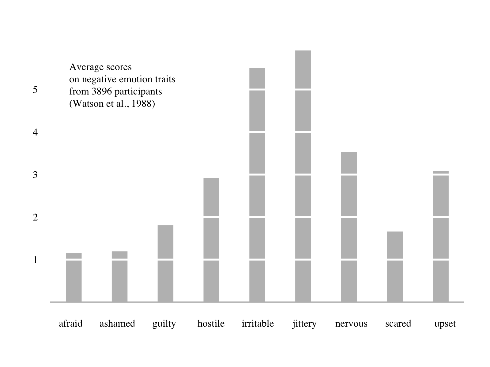
Takes a significant amount of code to create in base R:
library(psych)
d <- colMeans(msq[,c(2,7,34,36,42,43,46,55,68)], na.rm = T)*10
barplot(d, xaxt="n", yaxt="n", ylab="", border=F, width=c(.35), space=1.8)
axis(1, at=(1:length(d))-.26, labels=names(d), tick=F, family="serif")
axis(2, at=seq(1, 5, 1), las=2, tick=F, family="serif")
abline(h=seq(1, 5, 1), col="white", lwd=3)
abline(h=0, col="gray", lwd=2)
text(min(d)/2, max(d)/1.2, pos = 4, family="serif",
"Average scores\non negative emotion traits\nfrom 3896 participants\n(Watson et al., 1988)")But it also takes a significant amount of code in lattice:
library(lattice)
library(psych)
d <- colMeans(msq[,c(2,7,34,36,42,43,46,55,68)],na.rm = T)*10
barchart(sort(d), xlab="", ylab="", col = "grey", origin=1,
border = "transparent", box.ratio=0.5,
panel = function(x,y,...) {
panel.barchart(x,y,...)
panel.abline(v=seq(1,6,1), col="white", lwd=3)},
par.settings = list(axis.line = list(col = "transparent")))
ltext(current.panel.limits()$xlim[2]-50, adj=1,
current.panel.limits()$ylim[1]-100,
"Average scores\non negative emotion traits\nfrom 3896 participants\n(Watson et al., 1988)")or in the ggplot2 plotting system:
library(ggplot2)
library(ggthemes)
library(psych)
library(reshape2)
d <- melt(colMeans(msq[,c(2,7,34,36,42,43,46,55,68)],na.rm = T)*10)
d$trait <- rownames(d)
ggplot(d, aes(x=trait, y=value)) + theme_tufte(base_size=14, ticks=F) +
geom_bar(width=0.25, fill="gray", stat = "identity") + theme(axis.title=element_blank()) +
scale_y_continuous(breaks=seq(1, 5, 1)) +
geom_hline(yintercept=seq(1, 5, 1), col="white", lwd=1) +
annotate("text", x = 3.5, y = 5, adj=1, family="serif",
label = c("Average scores\non negative emotion traits
from 3896 participants\n(Watson et al., 1988)"))The important thing to keep in mind is that expository graphs and tables will be significantly more work than exploratory graphs. They also typically take quite a bit of Googling to make sure you get them to look just right so they will stand out and be easily understood.
In the remainder of this lesson we will focus on taking exploratory figures and tables and turning them into expository figures and tables - highlighting some of the key tools for making these conversions.
11.3 Creating Expository Graphs
For this example we will be using the awesome Palmer Penguins data set! The artwork for this data is made by the amazing [@allison_horst](https://twitter.com/allison_horst)

We can start out by looking at the data
## # A tibble: 344 x 8
## species island bill_length_mm bill_depth_mm flipper_length_… body_mass_g
## <fct> <fct> <dbl> <dbl> <int> <int>
## 1 Adelie Torge… 39.1 18.7 181 3750
## 2 Adelie Torge… 39.5 17.4 186 3800
## 3 Adelie Torge… 40.3 18 195 3250
## 4 Adelie Torge… NA NA NA NA
## 5 Adelie Torge… 36.7 19.3 193 3450
## 6 Adelie Torge… 39.3 20.6 190 3650
## 7 Adelie Torge… 38.9 17.8 181 3625
## 8 Adelie Torge… 39.2 19.6 195 4675
## 9 Adelie Torge… 34.1 18.1 193 3475
## 10 Adelie Torge… 42 20.2 190 4250
## # … with 334 more rows, and 2 more variables: sex <fct>, year <int>and making what would be a fairly typical exploratory graph.
## Warning: Removed 2 rows containing missing values (geom_point).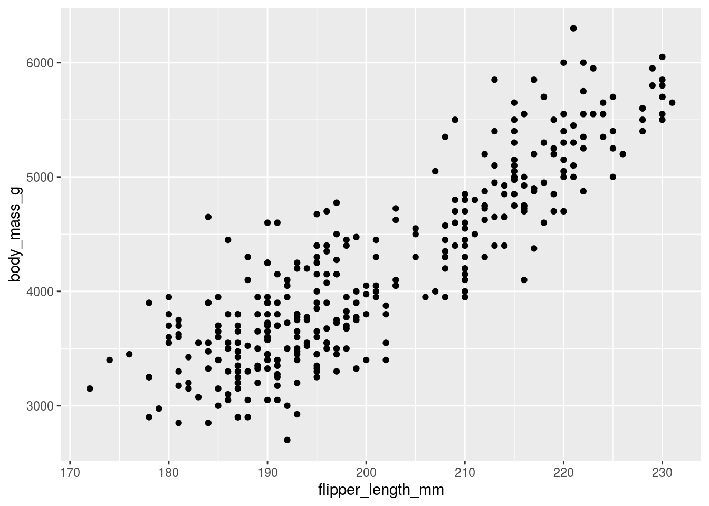
This isn’t bad! It’s a pretty decent way to start and you can already see the “take home message” that increasing flipper length is associated with increasing body mass. But we can do better, let’s label the different species
## Warning: Removed 2 rows containing missing values (geom_point).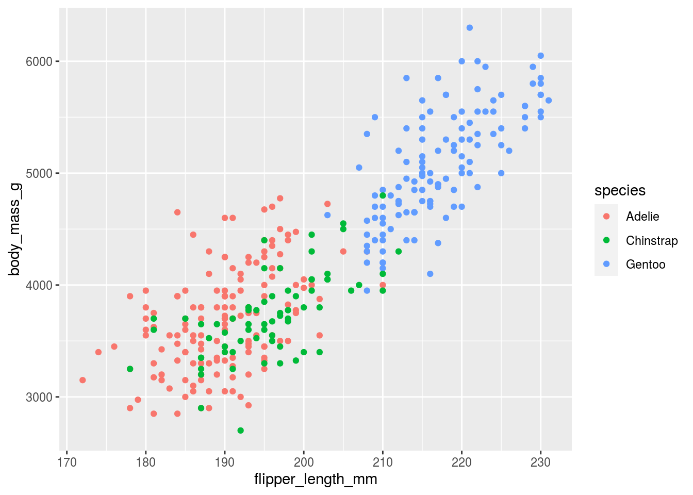
So far so good, and here we see that the relationship is increasing regardless of the species type. This graph looks almost good enough to put in a paper, but we are missing a few key components.
11.3.1 Background color
In general, less is more when it comes to background color. In his talk The glamour of graphics Will Chase points out that:
White space is like garlic; take the amount you think you need, then triple it.
He also
penguins %>%
ggplot(aes(x=flipper_length_mm,
y=body_mass_g,
color=species)) +
geom_point() +
theme_minimal()## Warning: Removed 2 rows containing missing values (geom_point).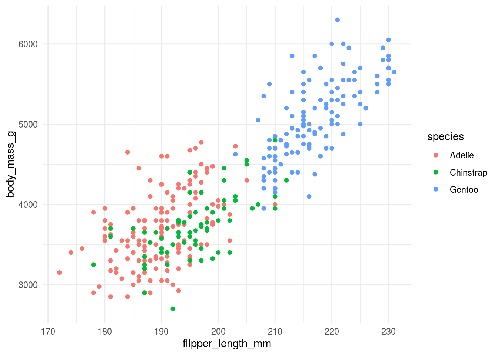
11.3.2 Axis titles and axis labels
Axis titles and labels need to be big enough to read. They should include labels of units (when appropriate) and should be written in full words, not in abbreviations. If you can avoid it you should also try to make it so that your audience doesn’t have to turn their head to read your plot.
We can rotate the y-axis label and increase the font on the tick marks.
penguins %>%
ggplot(aes(x=flipper_length_mm,
y=body_mass_g,
color=species)) +
geom_point() +
ylab("Body \n Mass \n (g)") +
xlab("Flipper Length (mm)") +
theme_minimal() +
theme(axis.title.y = element_text(angle = 0, vjust = 0.5,size=14),
axis.text = element_text(size=12)) ## Warning: Removed 2 rows containing missing values (geom_point).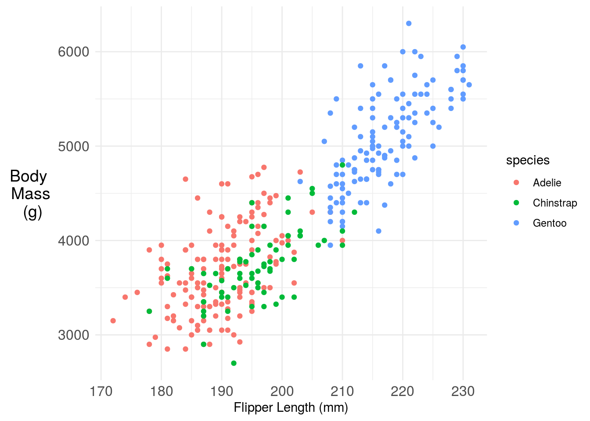
11.3.3 Legends (or not!)
When used, legends should have labeling in plain language that makes the graph self contained. So for example we could update the figure legend:
penguins %>%
ggplot(aes(x=flipper_length_mm,
y=body_mass_g,
color=species)) +
geom_point() +
ylab("Body \n Mass \n (g)") +
xlab("Flipper Length (mm)") +
labs(color="Penguin Species")+
theme_minimal() +
theme(axis.title.y = element_text(angle = 0, vjust = 0.5,size=14),
axis.text = element_text(size=12)) ## Warning: Removed 2 rows containing missing values (geom_point).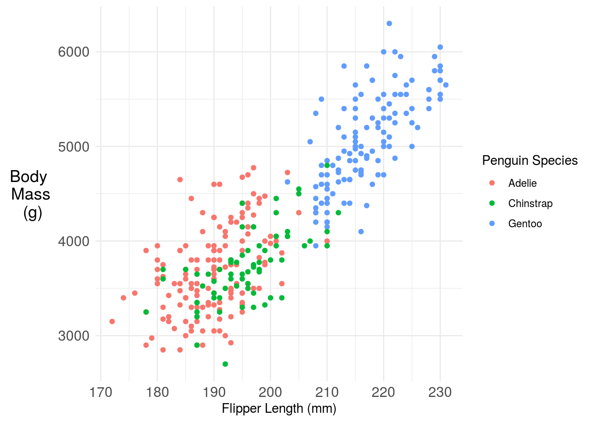
One challenge here is the legend is taking up a lot of space, that makes the plot harder to read. You have a couple of solutions. One is you could move the legend inside the plot. Another is you could just label the points directly with annotation. Here I’m using the basic ggplot2 functionality, but the ggforce has some nice labeling functionality.
penguins %>%
dplyr::filter(!is.na(flipper_length_mm)) %>%
ggplot(aes(x=flipper_length_mm,
y=body_mass_g,
color=species)) +
geom_point() +
ylab("Body \n Mass \n (g)") +
xlab("Flipper Length (mm)") +
labs(color="Penguin Species")+
annotate(
geom = "curve",
x = 180, y = 5000, xend = 182, yend = 3100,
curvature = .3,
arrow = arrow(length = unit(2, "mm"))
) +
geom_text(aes(x=180, y=5000,
label="Adelie Penguins",
color="Adelie"), show_guide=F) +
annotate(
geom = "curve",
x = 215, y = 3000, xend = 198, yend = 3600,
curvature = .3,
arrow = arrow(length = unit(2, "mm"))
) +
geom_text(aes(x=215, y=3000,
label="Chinstrap Penguins",
color="Chinstrap"), show_guide=F)+
annotate(
geom = "curve",
x = 185, y = 6000, xend = 220, yend = 5000,
curvature = .3,
arrow = arrow(length = unit(2, "mm"))
) +
geom_text(aes(x=185, y=6000,
label="Gentoo Penguins",
color="Gentoo"), show_guide=F)+
theme_minimal() +
theme(axis.title.y = element_text(angle = 0, vjust = 0.5,size=14),
axis.text = element_text(size=12),
legend.position = "none") ## Warning: `show_guide` has been deprecated. Please use `show.legend` instead.
## Warning: `show_guide` has been deprecated. Please use `show.legend` instead.
## Warning: `show_guide` has been deprecated. Please use `show.legend` instead.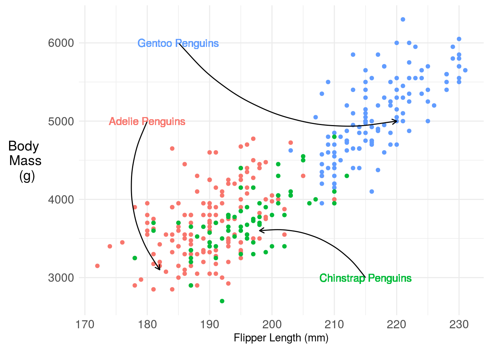
11.3.4 Titles (with color!)
This at least removes all the legend space, but I still find it pretty hard to read. I find that titles labeled with colors are much easier to follow, so something like this, which we can create with the ggtext package and a little HTML:
library(ggtext)
penguins %>%
ggplot(aes(x=flipper_length_mm,
y=body_mass_g,
color=species)) +
geom_point() +
ylab("Body \n Mass \n (g)") +
xlab("Flipper Length (mm)") +
labs(color="Penguin Species",
title = "<b> Penguin body mass increases with flipper length</b><br>
<span style = 'font-size:10pt'>Penguins of three species, <span style='color:#F8766D'>Adelie</span>, <span style='color:#00BA38'>Chinstrap </span>, and <span style='color:#619CFF'>Gentoo</span>, have body mass that increase with flipper length. </span>")+
theme_minimal() +
theme(
plot.title.position = "plot",
plot.title = element_textbox_simple(size=12),
axis.title.y = element_text(angle = 0, vjust = 0.5,size=14),
axis.text = element_text(size=12),
legend.position = "none") ## Warning: Removed 2 rows containing missing values (geom_point).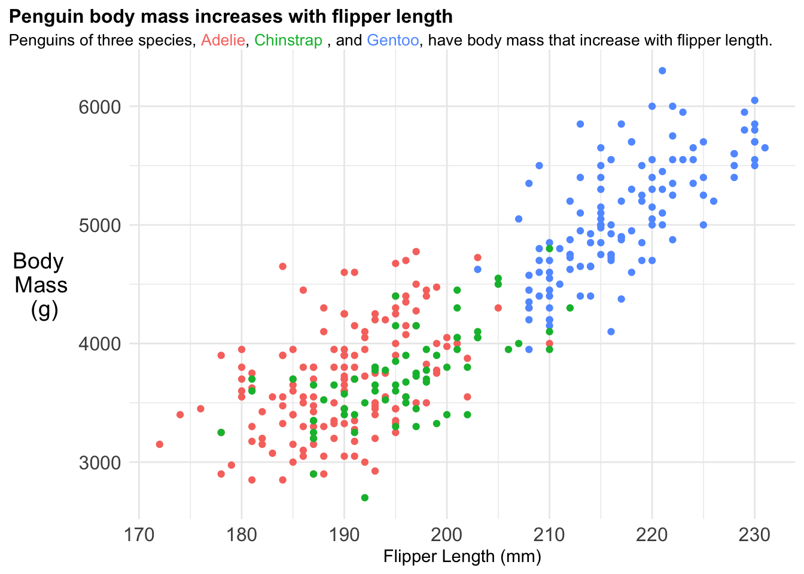
11.3.5 Adding a model fit
You may add a smooth term or model fit to highlight key trends in the data. The ggplot2 package makes this relatively easy by using the term geom_smooth but you should be careful to make sure you understand what kind of model is being fit “under the hood”. For example here the regression model is actually fit to each penguin species seperately - implying a full interaction model between species and both the slope and intercept coefficients.
library(ggtext)
penguins %>%
ggplot(aes(x=flipper_length_mm,
y=body_mass_g,
color=species)) +
geom_point() +
ylab("Body \n Mass \n (g)") +
xlab("Flipper Length (mm)") +
labs(color="Penguin Species",
title = "<b> Penguin body mass increases with flipper length</b><br>
<span style = 'font-size:10pt'>Penguins of three species, <span style='color:#F8766D'>Adelie</span>, <span style='color:#00BA38'>Chinstrap </span>, and <span style='color:#619CFF'>Gentoo</span>, have body mass that increase with flipper length. </span>")+
theme_minimal() +
theme(
plot.title.position = "plot",
plot.title = element_textbox_simple(size=12),
axis.title.y = element_text(angle = 0, vjust = 0.5,size=14),
axis.text = element_text(size=12),
legend.position = "none") +
geom_smooth(method = "lm", se = FALSE)## `geom_smooth()` using formula 'y ~ x'## Warning: Removed 2 rows containing non-finite values (stat_smooth).## Warning: Removed 2 rows containing missing values (geom_point).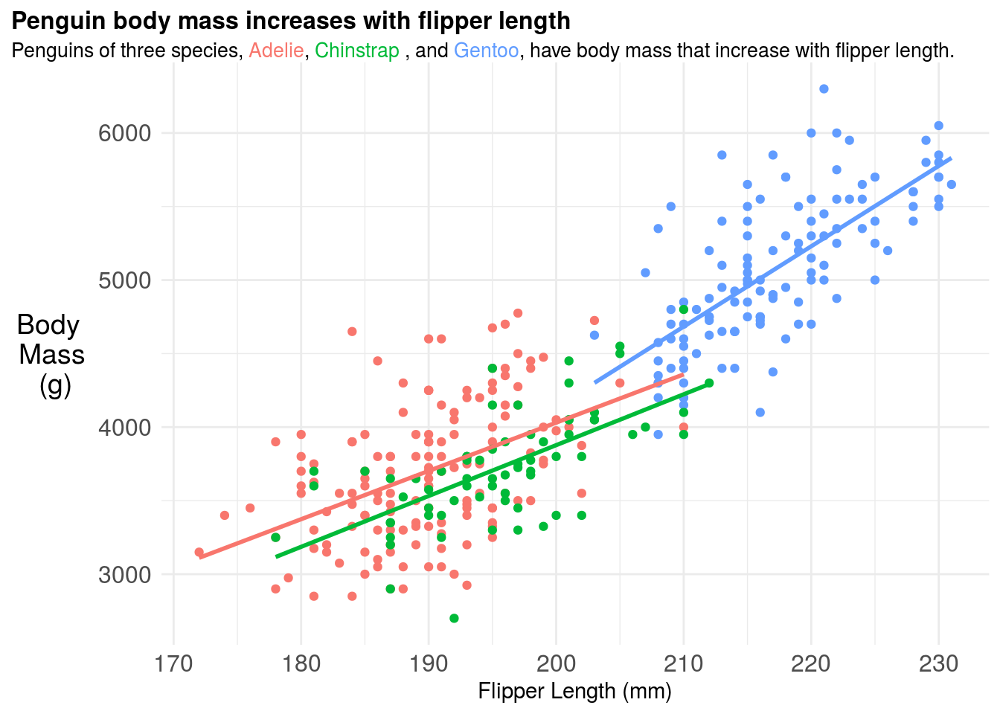
11.3.6 Figure captions
If you were going to include this figure in a paper you should also include a figure caption. The figure caption should be detailed. Think too detailed. You should try to imagine handing the figure and figure caption over to a friend and they should be able to tell the whole “story” of that figure from only those two pieces of information. It is a good idea for each of your figures to have a topic sentence, typically in bold, that highlights the key take home message for your audience. So for example, the figure caption for the above plot could be:
Figure 1. Penguin body mass increases with flipper length across three penguin species A plot of body mass in grams (g) versus flipper length in milimeters (mm) for three Penguin species: Adelie (red), Chinstrap (green), and Gentoo (blue). A separate linear regression fit to each species type is also shown, highlighting that penguin body mass increases with flipper length at different rates across different species. It is not surprising to see this correlation, since body size and body mass are typically highly correlated phenotypes.
11.3.7 Colors and fonts
Will Chase’s excellent talk on the Glamour of Graphics goes into some details about choices of fonts and colors. One thing to keep in mind when producing graphics for both papers and talks is that some people are colorblind so can not distinguish between certain combinations of colors. There are different types of colorblindness. You can check how your plot will appear to color blind people by uploading it to websites like this. In R there is also a package for simulating colorblindness:
## Loading required package: colorspacep = penguins %>%
ggplot(aes(x=flipper_length_mm,
y=body_mass_g,
color=species)) +
geom_point() +
ylab("Body \n Mass \n (g)") +
xlab("Flipper Length (mm)") +
labs(color="Penguin Species",
title = "<b> Penguin body mass increases with flipper length</b><br>
<span style = 'font-size:10pt'>Penguins of three species, <span style='color:#F8766D'>Adelie</span>, <span style='color:#00BA38'>Chinstrap </span>, and <span style='color:#619CFF'>Gentoo</span>, have body mass that increase with flipper length. </span>")+
theme_minimal() +
theme(
plot.title.position = "plot",
plot.title = element_textbox_simple(size=12),
axis.title.y = element_text(angle = 0, vjust = 0.5,size=14),
axis.text = element_text(size=12),
legend.position = "none") +
geom_smooth(method = "lm", se = FALSE)
cvd_grid(p)## `geom_smooth()` using formula 'y ~ x'## Warning: Removed 2 rows containing non-finite values (stat_smooth).## Warning: Removed 2 rows containing missing values (geom_point).## `geom_smooth()` using formula 'y ~ x'## Warning: Removed 2 rows containing non-finite values (stat_smooth).
## Warning: Removed 2 rows containing missing values (geom_point).## `geom_smooth()` using formula 'y ~ x'## Warning: Removed 2 rows containing non-finite values (stat_smooth).
## Warning: Removed 2 rows containing missing values (geom_point).## `geom_smooth()` using formula 'y ~ x'## Warning: Removed 2 rows containing non-finite values (stat_smooth).
## Warning: Removed 2 rows containing missing values (geom_point).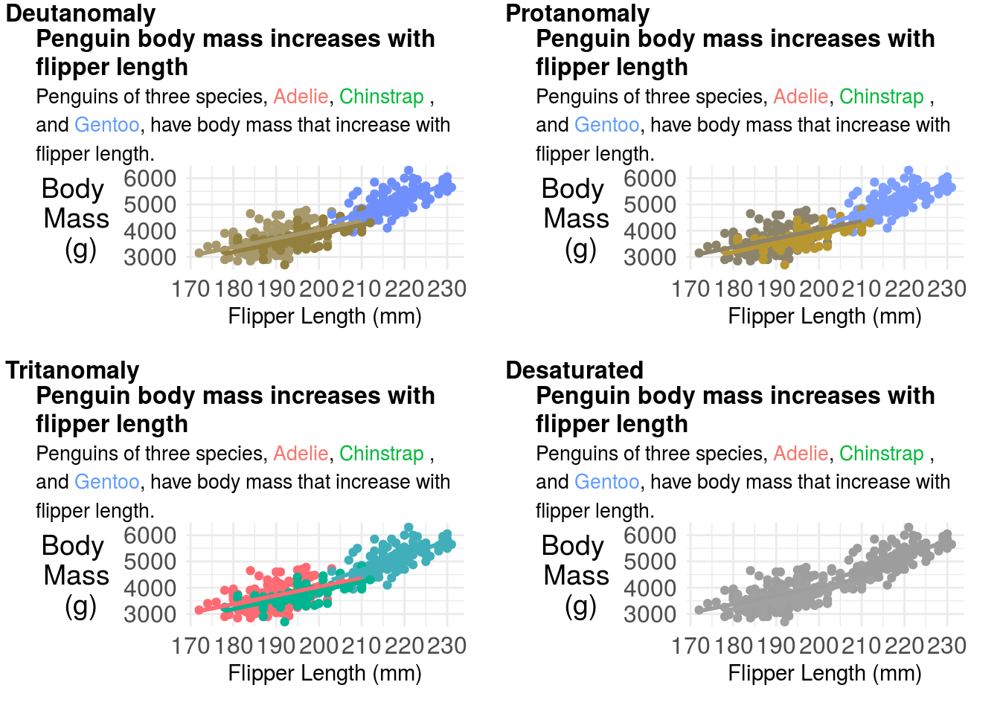
You can try changing your color palette to correct these issues. But don’t forget to change your title colors as well! A common set of more color-blind friendly palettes are the viridis palettes.
p = penguins %>%
ggplot(aes(x=flipper_length_mm,
y=body_mass_g,
color=species)) +
geom_point() +
ylab("Body \n Mass \n (g)") +
xlab("Flipper Length (mm)") +
labs(color="Penguin Species",
title = "<b> Penguin body mass increases with flipper length</b><br>
<span style = 'font-size:10pt'>Penguins of three species, <span style='color:#440154'>Adelie</span>, <span style='color:#21908C'>Chinstrap </span>, and <span style='color:#FDE725'>Gentoo</span>, have body mass that increase with flipper length. </span>")+
scale_color_viridis_d()+
theme_minimal() +
theme(
plot.title.position = "plot",
plot.title = element_textbox_simple(size=12),
axis.title.y = element_text(angle = 0, vjust = 0.5,size=14),
axis.text = element_text(size=12),
legend.position = "none") +
geom_smooth(method = "lm", se = FALSE)
p## `geom_smooth()` using formula 'y ~ x'## Warning: Removed 2 rows containing non-finite values (stat_smooth).## Warning: Removed 2 rows containing missing values (geom_point).
These look a bit better for people with color blindness:
## `geom_smooth()` using formula 'y ~ x'## Warning: Removed 2 rows containing non-finite values (stat_smooth).## Warning: Removed 2 rows containing missing values (geom_point).## `geom_smooth()` using formula 'y ~ x'## Warning: Removed 2 rows containing non-finite values (stat_smooth).
## Warning: Removed 2 rows containing missing values (geom_point).## `geom_smooth()` using formula 'y ~ x'## Warning: Removed 2 rows containing non-finite values (stat_smooth).
## Warning: Removed 2 rows containing missing values (geom_point).## `geom_smooth()` using formula 'y ~ x'## Warning: Removed 2 rows containing non-finite values (stat_smooth).
## Warning: Removed 2 rows containing missing values (geom_point).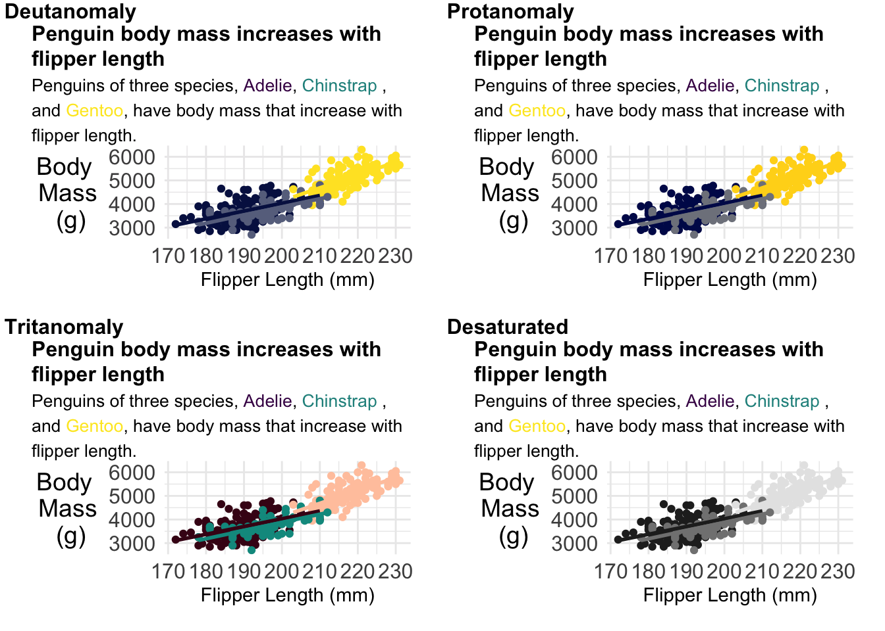
11.3.8 Multi-panel plots
If you are creating multi-panel plots, each panel should be labeled with either a lowercase or upper case letter. You should head the warning that “whitespace is like garlic” and make sure you don’t overcrowd your figures. In general, when creating multi-panel figures, each panel should be part of the same “story” or focused on the same question.
If you are building multi-panel plots, it can be a lot easier to put the panels into presentation building software like Powerpoint, Keynote or Google Slides and arrange your panels together. However, the patchwork R package is pretty slick and gives you pretty fine-grained control over how to organize plots together.
Multi-panel figure captions should include descriptions of each figure separately, labeled with the same values as in the multi-panel plots.
11.3.9 Miscellaneous Advice
- When you have a lot of points in a plot, consider using a heatmap - for example geom_hex.
- When you save your figures - especially if they have a large number of points - you will find much smaller file sizes if you save them as .png files.
- Err on the side of simplicity and showing the data whenever possible.
- Mapping geographically and plotting timeseries have entirely different sets of aesthetics and manipulations you will need to do.
- Google is your friend. The plots above included these searches for your instructor: - “check colors colorblindness R” - “geom_smooth with groups” - “ggtext color to match plot colors” - “label group of points ggrepel” (wrong turn) - “remove grid lines theme minimal” - and many more!
- The R graph gallery is your friend
11.4 Creating Expository Tables
There have been many arguments for why tables should be turned into figures. Your instructor has that natural inclination as well. However, sometimes you will need to produce a table either because the format of the journal requires it (Table 1 in a clinical paper consists of descriptive statististcs has a very defined format, and usually can’t be replaced with a figure).
In R there are a variety of packages for making tables. During exploration, I generally make them using the skimr or dplyr packages. I like skimr for the quick overview:
| Name | Piped data |
| Number of rows | 344 |
| Number of columns | 8 |
| _______________________ | |
| Column type frequency: | |
| factor | 3 |
| numeric | 5 |
| ________________________ | |
| Group variables | None |
Variable type: factor
| skim_variable | n_missing | complete_rate | ordered | n_unique | top_counts |
|---|---|---|---|---|---|
| species | 0 | 1.00 | FALSE | 3 | Ade: 152, Gen: 124, Chi: 68 |
| island | 0 | 1.00 | FALSE | 3 | Bis: 168, Dre: 124, Tor: 52 |
| sex | 11 | 0.97 | FALSE | 2 | mal: 168, fem: 165 |
Variable type: numeric
| skim_variable | n_missing | complete_rate | mean | sd | p0 | p25 | p50 | p75 | p100 | hist |
|---|---|---|---|---|---|---|---|---|---|---|
| bill_length_mm | 2 | 0.99 | 43.92 | 5.46 | 32.1 | 39.23 | 44.45 | 48.5 | 59.6 | ▃▇▇▆▁ |
| bill_depth_mm | 2 | 0.99 | 17.15 | 1.97 | 13.1 | 15.60 | 17.30 | 18.7 | 21.5 | ▅▅▇▇▂ |
| flipper_length_mm | 2 | 0.99 | 200.92 | 14.06 | 172.0 | 190.00 | 197.00 | 213.0 | 231.0 | ▂▇▃▅▂ |
| body_mass_g | 2 | 0.99 | 4201.75 | 801.95 | 2700.0 | 3550.00 | 4050.00 | 4750.0 | 6300.0 | ▃▇▆▃▂ |
| year | 0 | 1.00 | 2008.03 | 0.82 | 2007.0 | 2007.00 | 2008.00 | 2009.0 | 2009.0 | ▇▁▇▁▇ |
But I often use dplyr more frequently for looking at individual variables or pairs of variables:
## # A tibble: 5 x 3
## `is.na(sex)` species n
## <lgl> <fct> <int>
## 1 FALSE Adelie 146
## 2 FALSE Chinstrap 68
## 3 FALSE Gentoo 119
## 4 TRUE Adelie 6
## 5 TRUE Gentoo 511.4.1 Table 1
As previously mentioned, Table 1 is a table of descriptive statistics and is frequently required in a number of different types of journals - most notably medical journals. There are thus usually highly specialized tools for creating this type of table. For example, in R the table1 package can be used to make descriptive tables:
##
## Attaching package: 'table1'## The following objects are masked from 'package:base':
##
## units, units<-penguins %>%
table1(~ factor(sex) + as.factor(island)+ bill_length_mm + bill_depth_mm | species,data=.)| Adelie (N=152) |
Chinstrap (N=68) |
Gentoo (N=124) |
Overall (N=344) |
|
|---|---|---|---|---|
| factor(sex) | ||||
| female | 73 (48.0%) | 34 (50.0%) | 58 (46.8%) | 165 (48.0%) |
| male | 73 (48.0%) | 34 (50.0%) | 61 (49.2%) | 168 (48.8%) |
| Missing | 6 (3.9%) | 0 (0%) | 5 (4.0%) | 11 (3.2%) |
| as.factor(island) | ||||
| Biscoe | 44 (28.9%) | 0 (0%) | 124 (100%) | 168 (48.8%) |
| Dream | 56 (36.8%) | 68 (100%) | 0 (0%) | 124 (36.0%) |
| Torgersen | 52 (34.2%) | 0 (0%) | 0 (0%) | 52 (15.1%) |
| bill_length_mm | ||||
| Mean (SD) | 38.8 (2.66) | 48.8 (3.34) | 47.5 (3.08) | 43.9 (5.46) |
| Median [Min, Max] | 38.8 [32.1, 46.0] | 49.6 [40.9, 58.0] | 47.3 [40.9, 59.6] | 44.5 [32.1, 59.6] |
| Missing | 1 (0.7%) | 0 (0%) | 1 (0.8%) | 2 (0.6%) |
| bill_depth_mm | ||||
| Mean (SD) | 18.3 (1.22) | 18.4 (1.14) | 15.0 (0.981) | 17.2 (1.97) |
| Median [Min, Max] | 18.4 [15.5, 21.5] | 18.5 [16.4, 20.8] | 15.0 [13.1, 17.3] | 17.3 [13.1, 21.5] |
| Missing | 1 (0.7%) | 0 (0%) | 1 (0.8%) | 2 (0.6%) |
However, note that there are R variable names in this table. We can remove these by creating new variables with easier to read names and units.
penguins2 = penguins %>%
dplyr::mutate(
sex = factor(sex,
levels=c("female","male","Missing"),
labels= c("Female","Male","Missing"))
)
label(penguins2$sex) = "Sex"
label(penguins2$island) = "Island"
label(penguins2$bill_length_mm) = "Bill Length"
label(penguins2$bill_depth_mm) = "Bill Depth"
units(penguins2$bill_length_mm) = "mm"
units(penguins2$bill_depth_mm) = "mm"
penguins2 %>%
table1(~ sex + island + bill_length_mm + bill_depth_mm | species,data=.)| Adelie (N=152) |
Chinstrap (N=68) |
Gentoo (N=124) |
Overall (N=344) |
|
|---|---|---|---|---|
| Sex | ||||
| Female | 73 (48.0%) | 34 (50.0%) | 58 (46.8%) | 165 (48.0%) |
| Male | 73 (48.0%) | 34 (50.0%) | 61 (49.2%) | 168 (48.8%) |
| Missing | 0 (0%) | 0 (0%) | 0 (0%) | 0 (0%) |
| Missing | 6 (3.9%) | 0 (0%) | 5 (4.0%) | 11 (3.2%) |
| Island | ||||
| Biscoe | 44 (28.9%) | 0 (0%) | 124 (100%) | 168 (48.8%) |
| Dream | 56 (36.8%) | 68 (100%) | 0 (0%) | 124 (36.0%) |
| Torgersen | 52 (34.2%) | 0 (0%) | 0 (0%) | 52 (15.1%) |
| Bill Length (mm) | ||||
| Mean (SD) | 38.8 (2.66) | 48.8 (3.34) | 47.5 (3.08) | 43.9 (5.46) |
| Median [Min, Max] | 38.8 [32.1, 46.0] | 49.6 [40.9, 58.0] | 47.3 [40.9, 59.6] | 44.5 [32.1, 59.6] |
| Missing | 1 (0.7%) | 0 (0%) | 1 (0.8%) | 2 (0.6%) |
| Bill Depth (mm) | ||||
| Mean (SD) | 18.3 (1.22) | 18.4 (1.14) | 15.0 (0.981) | 17.2 (1.97) |
| Median [Min, Max] | 18.4 [15.5, 21.5] | 18.5 [16.4, 20.8] | 15.0 [13.1, 17.3] | 17.3 [13.1, 21.5] |
| Missing | 1 (0.7%) | 0 (0%) | 1 (0.8%) | 2 (0.6%) |
That is a pretty passable Table 1! Note that there is only one significant digit past the decimal. Some other nice things about this table that should be emulated are: (1) reporting of N for each column, (2) reporting of both N and the percentages for factor variables, (3) for conditional tables like this also including the overall total.
11.4.2 Color in tables
While Table 1 is the most common use of tables that you will run into, they are often also used for reporting large collections of results across factor variables. For example, when reporting the results of state level polls, it is easier to summarize them in tabular format as the website FiveThirtyEight does:
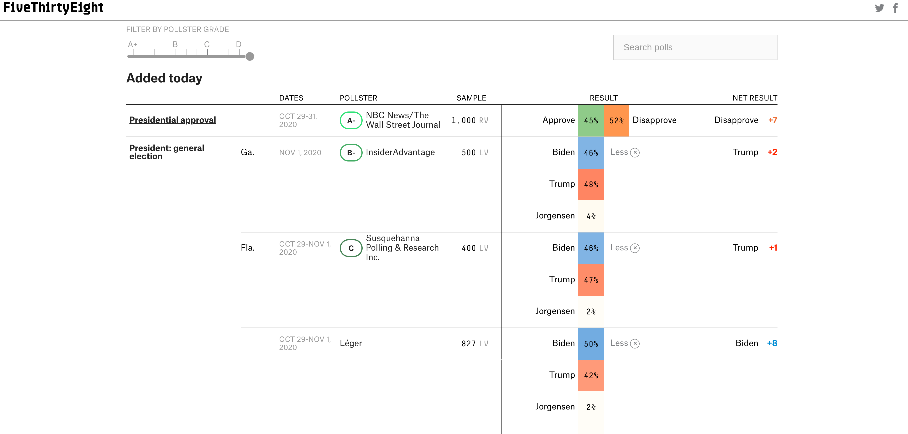
Most data analytic languages now make it possible for you to create expository tables with colors like these professional tables. In R there are a number of packages for making pretty tables. The gt package is an early effort by the folks at Rstudio to make a ggplot2 equivalent grammar of tables. That is one to keep your eye on if you like the grammar style approach to composition. But some of the other table-making options are more mature and have more bells and whistles. For example with the formattable package you can add within-cell barcharts, colors and icons - Laura Ellis has a nice walkthrough on how to make tables like this:
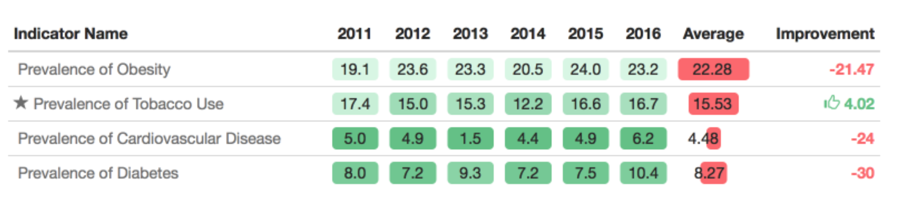
It can be useful to highlight important changes with arrows or +/- scales. Particularly when looking at data year over year.
11.4.3 Captions
As with figures, your expository tables should have captions with a declarative summary statement in bold, followed by a complete description of the table, sufficient for a reader to understand the table as a self contained unit. One common difference is that Table captions are typically shown above tables, as opposed to below.
11.5 Scientific graphics vs infographics
In his paper on infographics and statistical visualization Andrew Gelman talks about two types of graphics:
- Statistical data visualization, which is focused not on visual appeal but on facilitating an understanding of patterns in an applied problem, both in directing readers to specific information and allowing the readers to see for themselves.
- Infographics, which ideally should be attractive, grab one’s attention, tell a story and encourage the viewer to think about a particular dataset, both as individual measurements and as a representation of larger patterns.
Both can be valuable, though for the purposes of this course we are more focused on the former. That being said, one thing that statisticians could certainly learn from infographic designers is that the focus on story can make even the most complicated and dense statistical graphics more interpretable to your audience.
11.6 Additional Resources
11.7 Homework
- Template Repo: https://github.com/advdatasci/homework10
- Repo Name: homework10-ind-yourgithubusername
- Pull Date: 2020/11/09 9:00AM Baltimore Time